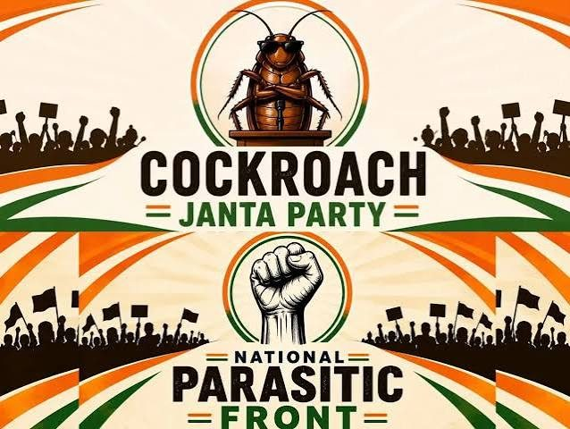

Cockroach Janta Party · Est. 16 May 2026
The Cockroach Janta Party (CJP) — Voice of India's Burnt-Out Youth.
A youth satirical movement started by Abhijeet Dipke after the Chief Justice of India compared some unemployed youth to “cockroaches.” Millions joined under #MainBhiCockroach — reclaiming the insult as resilience.
 Press · Voice
Press · Voice
 #MainBhiCockroach
#MainBhiCockroach
 Chhota size, badi soch
Chhota size, badi soch
Campaign art
Together. Resilient. Unstoppable.


More artwork
Gallery of the movement.

FAQ
Straight answers
Is CJP a registered political party?
No. It is a satirical youth civic movement — not registered with the Election Commission of India.
Who founded it?
Abhijeet Dipke on 16 May 2026, after CJI Surya Kant’s “cockroach” remarks about some unemployed youth.
Can I support the website financially?
Optional — yes. Above the campaign art on this page there’s a UPI scanner for voluntary website development support. It is not an NGO donation and not a political party fund. See Support page and payment policy.